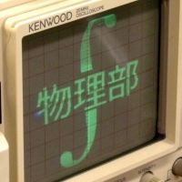
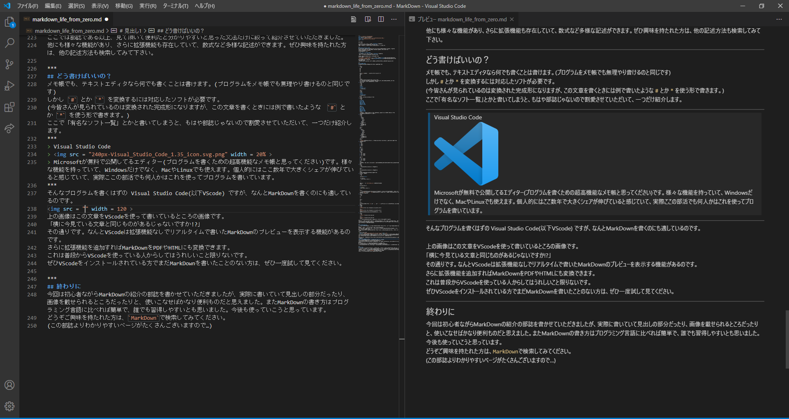

今回はこの部誌の原稿に使われている Markdown について、
知識ゼロの初心者なりに話してみたいと思います。
(実を言うとこの原稿が僕の「はじめてのMarkdown」だったりします…)
Markdownとは見出しや図やリンク、太字や斜体などを共通の書き方で書けるようにしたものです。
特にブログなどに投稿されている文章の多くは、これで書かれていたりします。
ファイルの拡張子は.mdです。
今回の文章で例を出すと
# ゼロから始めるMarkdown生活
今回はこの部誌の原稿に使われている **Markdown** について、
知識ゼロの初心者なりに話してみたいと思います。
と書くだけで、この文章の上から3行を表示できます。
解説すると、
# ゼロから始めるMarkdown生活 の # がその行の文章が題名であることを意味していて、
**Markdown** について は * の間を強調して表示(太字)するということを意味しています。
残りの文章はそのままですね。
「簡単でしょ？」
(分かりづらかった方はすいません… 検索書ければ分かりやすいのたくさんあるのでそちらに…)
ここではMarkdownでどう書けばどうなるかを一覧にしてみます。
md
あ
い
う
え
お
最後のおのあとに(半角スペース2個)が入ってますmd
*斜体*
_斜体_
**太字**
__太字__
***太字&斜体***
___太字&斜体___
<結果>*でも_でも結果は同じになります。見出し
<記述>
# 見出し1
## 見出し2
### 見出し3
#### 見出し4
##### 見出し5
###### 見出し6
<結果>
<解説>
#を並べるだけで見出しになります。たくさん並べれば並べるほど小さい見出しになります。
(この書き方の単純さはWordも顔負けかも)
リスト
<記述>
```md
- 項目名とかくと、リストが作れます。さらにリストの中にリストをまたつくることもできます。番号付きリスト
<記述1>
```md
1ばかり書く書き方は数字を降り間違えることがなく、編集に強くなります。引用
<記述>
> 「天才とは99%の努力と1%のひらめきである」
<結果>
「天才とは99%の努力と1%のひらめきである」
<解説>
引用した文章を分かりやすく、明示できます。
プログラムを書き込む
<記述>
'''c
#include<stdio.h>
int main(){
puts("Hello, World.");
}
'''
(↑実際は ' を Shift押しながら@ に置き換えて下さい)
<表示>
#include<stdio.h>
int main(){
puts("Hello, World.");
}
<解説>
'''の後に拡張子をつなげると、様々なプログラミング言語のコードを分りやすく書き込むことが出来ます。ちなみに、<表示>の部分も'''mdと書いて表示させてます。プログラムがつきものの、物理部からすればとても便利な書式なのです。
横線
<記述>
***
___
---
<結果>
<解説>
横線を簡単に引けます。 *** でも ___ でも --- でも効果は変わりません。内容の切れ目などに最適です。
リンク
<記述>
[六甲学院](http://www.rokkogakuin.ed.jp/public_html/)
<結果>
六甲学院
<解説>
長くて見にくいURLを、簡単に文字列に置き換えられます。
画像
<記述>

<結果>

<解説>
画像もパスを書くか、URLを書くだけで簡単に画像をのせることができて便利です。
ここでは部誌である以上、見て頂いて便利だと分かりやすいと思った文法だけに絞って紹介させていただきました。
他にも様々な機能があり、さらに拡張機能も存在していて、数式など多様な記述ができます。ぜひ興味を持たれた方は、他の記述方法も検索してみて下さい。
メモ帳でも、テキストエディタなら何でも書くことは書けます。(プログラムをメモ帳でも無理やり書けるのと同じです)
しかし # とか * を変換するには対応したソフトが必要です。
(今皆さんが見られているのは変換された完成形になりますが、この文章を書くときには例で書いたような # とか * を使う形で書きます。)
ここで「有名なソフト一覧」とかと書いてしまうと、もはや部誌じゃないので割愛させていただいて、一つだけ紹介します。
Visual Studio Code
Microsoftが無料で公開してるエディター(プログラムを書くための超高機能なメモ帳と思ってください)です。様々な機能を持っていて、Windowsだけでなく、MacやLinuxでも使えます。個人的にはここ数年で大きくシェアが伸びていると感じていて、実際ここの部活でも何人かはこれを使ってプログラムを書いています。
そんなプログラムを書くはずの Visual Studio Code(以下VScode) ですが、なんとMarkdownを書くのにも適しているのです。

上の画像はこの文章をVScodeを使って書いているところの画像です。
「横に今見ている文章と同じものがあるじゃないですか!?」
その通りです。なんとVScodeは拡張機能なしでリアルタイムで書いたMarkdownのプレビューを表示する機能があるのです。
さらに拡張機能を追加すればMarkdownをPDFやHTMLにも変換できます。
これは普段からVScodeを使っている人からしてはうれしいこと限りないです。
ぜひVScodeをインストールされている方でまだMarkdownを書いたことのない方は、ぜひ一度試して見てください。
今回は初心者ながらMarkdownの紹介の部誌を書かせていただきましたが、実際に書いていて見出しの部分だったり、画像を載せられるところだったりと、使いこなせばかなり便利ものだと思えました。またMarkdownの書き方はプログラミング言語に比べれば簡単で、誰でも習得しやすいとも思いました。今後も使っていこうと思っています。
どうぞご興味を持たれた方は、Markdownで検索してみてください。
(この部誌よりわかりやすいページがたくさんございますので…)